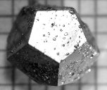

Semigroup Theory
A semigroup is a set with an associative binary operation. Groups are examples of semigroups, although there are many more that are not groups. To give you an idea of just how many more, there are 16 groups of order 9 or less, but there are 52,991,244,687,909 semigroups! Most of these are uninteresting. To be more precise, asymptotically all finite semigroups are nilpotent of degree 3, that is all products of three elements equal zero and so associativity is trivially satisfied. But there are still many interesting semigroups with lots of structure.
Sometimes it is helpful to think of a semigroup as a generalisation of a group, and use group theoretic techniques to study them. Other times, with their ideal structure, it makes more sense to use ring theoretic techniques. But these can only take you so far. Over the last 50 years or so, semigroup theory has developed in to something quite distinct, with its own particular approach.
Partial Symmetries
Inverse semigroups are a good example of the rich structure that can be found outside the world of group theory. If group theory is the study of symmetry, then inverse semigroup theory is the study of partial symmetry, that is, structures that have self-similarity. Such structures abound in nature, from ferns and snowflakes, to coastlines and music. Even the behaviour of the stock market can be seen to have elements of self-similarity.
For example: crystals. It was originally believed that all crystals have periodic tilings, in particular the crystallographic restriction did not allow for the existence of 5-fold symmetry. However it was recently discovered that there exist crystalline structures with apparently aperiodic tilings. In 1984, the Israeli scientist Dan Shechtem announced the discovery of a phase of an aluminium-manganese alloy which produced a sharp diffractogram with icosahedral symmetry.
He was awarded the Nobel Prize for Chemistry in 2011 for the discovery 'quasicrystals'.

Incidentally, the only known naturally occurring quasicrystals appear to have come from outer space!
The mathematical structure behind such objects is no longer in the world of group theory, but of inverse semigroup theory. This is just a small part of a much richer theory that relates inverse semigroups, groupoids and C*-algebras with many applications in non-commutative geometry and mathematical physics (see
[1]
and
[2]).
Non-additive homology
My thesis was on the study of S-acts, that is, the category of sets on which a semigroup acts. This is similar to studying the category of modules on which a ring acts. Attempts to generalise some of the approaches in homological algebra to the (non-additive) category of acts over a monoid is often referred to as 'non-additive homology' or the 'homological classification of monoids' (recall, a monoid is a semigroup with an identity). The hope is that the category of S-acts can reveal important information about the algebraic structure of the monoid.
In particular I was studying covers of acts. The philosophy behind covers (and envelopes) is to approximate general objects by objects with a classified structure. The category of S-acts is in general too difficult to understand, however some progress is made if we can approximate each act by an act from some classified subcategory of acts using a functor that behaves like a weaker version of an adjoint to the forgetful functor.
This approach has had much success in the area of flat covers. The celebrated flat cover conjecture (now a theorem) states that every module over every ring has a flat cover. This was an open problem for 20 years but was proved in 2001 independently by Encohs' and Bican & El Bashir. It led to many surprising applications in (co)homology of various categories. In particular, if you have a category that does not have enough projectives, but does have enough flats, then flat resolutions using successive flat covers can play the role of projective resolutions, giving well-defined homology groups. This area is often referred to as 'relative homolgical algebra' (see
[3]
and
[4]).
It transpires however that flat covers of acts do not exist for every monoid, although I have shown it be true for a very large class of monoids. Indeed there is only currently one known counterexample.
I also studied other types of covers: projective, weakly flat, injective, divisible, torsion-free etc. and gave some characterisations of when they exist. These proofs are categorical in nature and often come down to set theoretic problems, i.e. can I show that I only have a set of acts (as opposed to a proper class).
A copy of my thesis can be found here:
'
Covers of Acts over Monoids'.